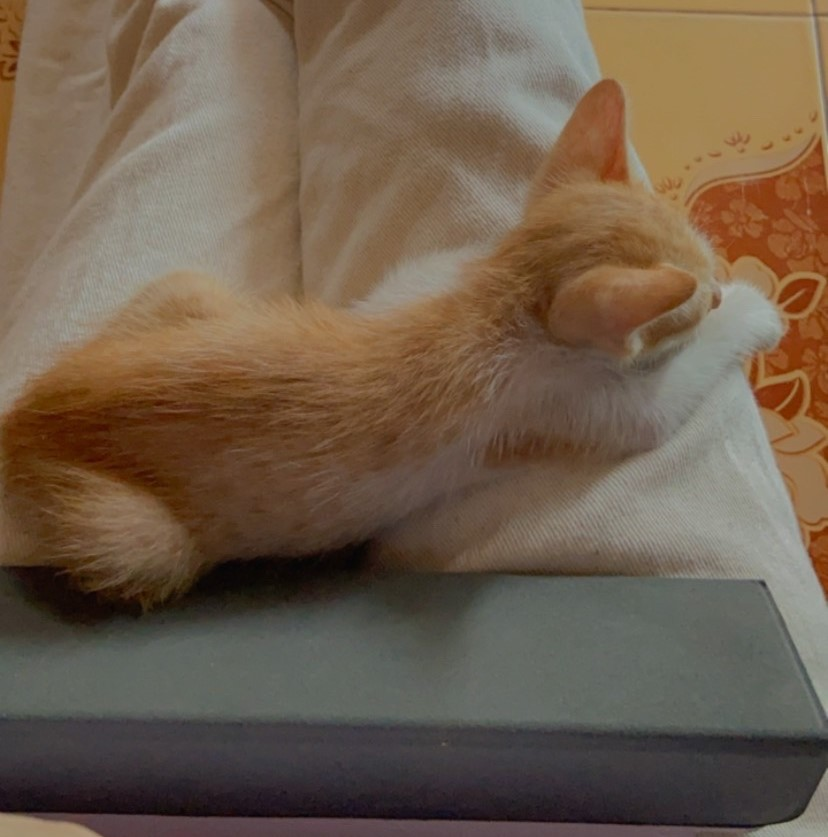
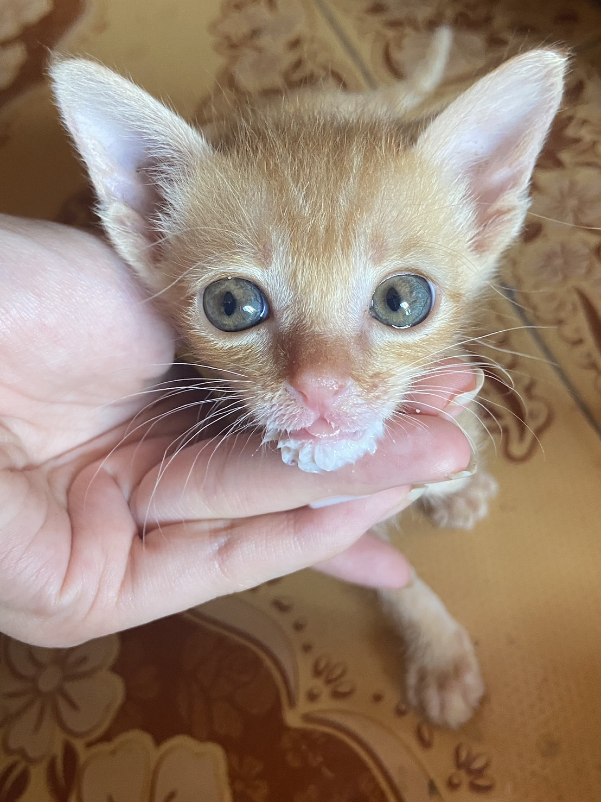
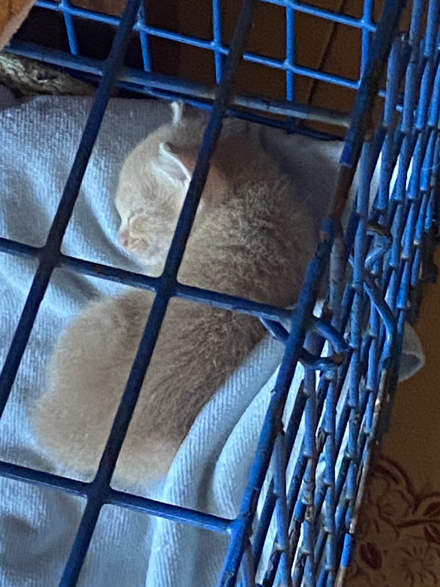
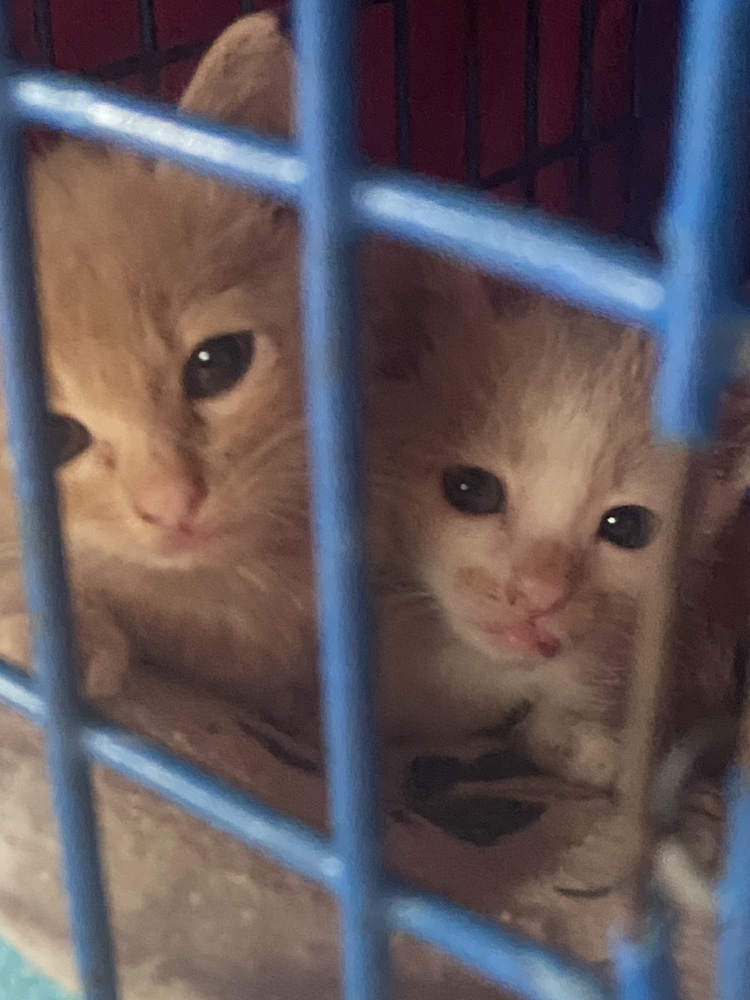

Meeso:Meeso is a male orange-and-white cat with a kind and peaceful personality. He’s a calm cat who enjoys a quiet environment and loves to relax.
Meetang: Meetang is an orange female cat with an aggressive and fierce nature. She can be a bit wild and is not as friendly as the others, often showing her strong personality.
Meeya:Meeya is a light-brown female cat who loves attention and enjoys cuddling. However, she can also be a bit nippy and has a tendency to bite from time to time.
Meemie: Meemie is a female cat with a similar light-brown color to Miya. She’s playful, as most kittens are, but her energy and vocal power are somewhat low because she was abandoned by her mother. She went two days without milk before I found her, which affected her growth. Meeka:Meeka is a female cat and comes from the same litter as Mimi. She had more access to her mother’s milk, and because of that, she’s full of energy. She can play all day long and has a strong, loud voice.
